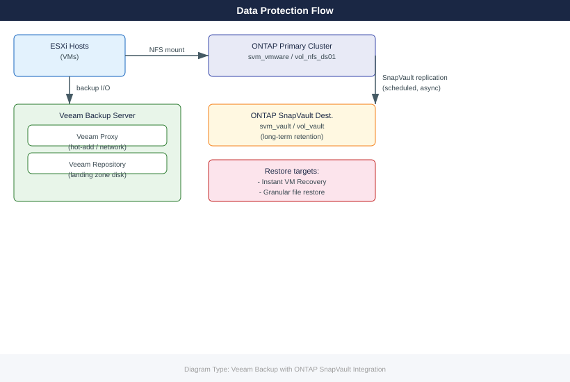

Veeam Backup with ONTAP SnapVault Integration¶
Applies to: Storage (multi-vendor)

Before You Begin¶
Prerequisites:
| Component | Requirement |
|---|---|
| Veeam B&R | Version 12+ with Enterprise or above licence (SnapVault integration requires Enterprise) |
| ONTAP Primary | ONTAP 9.10+; SnapMirror/SnapVault licence active; SVM with NFS datastore volume |
| ONTAP Destination | Separate ONTAP cluster (or different SVM on same cluster) with SnapVault dest volume |
| Cluster Peering | ONTAP cluster peer and SVM peer relationships established between primary and destination |
| Network | Veeam server has IP connectivity to ONTAP management LIFs; intercluster LIFs peered |
| Credentials | ONTAP vsadmin (per-SVM) or cluster-admin for Veeam storage registration |
Verify cluster peering before starting:
# On primary ONTAP cluster
cluster peer show
vserver peer show
# On destination cluster
cluster peer show
vserver peer show
# Confirm intercluster LIFs are up
network interface show -role intercluster
Cluster Peer Status (Primary):
Peer Cluster Name Peer Address State
------------------------ ----------------- -------
ontap-dr-cluster 192.168.100.50 peered
ontap-dr-cluster 192.168.100.51 peered
Vserver Peer Status (Primary):
Vserver Peer Vserver Peer Cluster State
----------- --------------- ------------------ -------
svm_prod svm_dr ontap-dr-cluster peered
svm_prod svm_dr ontap-dr-cluster peered
Cluster Peer Status (Destination):
Peer Cluster Name Peer Address State
------------------------ ----------------- -------
ontap-prod-cluster 192.168.100.10 peered
ontap-prod-cluster 192.168.100.11 peered
Vserver Peer Status (Destination):
Vserver Peer Vserver Peer Cluster State
----------- --------------- ------------------ -------
svm_dr svm_prod ontap-prod-cluster peered
svm_dr svm_prod ontap-prod-cluster peered
Intercluster LIFs Status:
Vserver Name: cluster
Logical Interface: ic_lif_01
Address: 192.168.100.10
Status: up
Logical Interface: ic_lif_02
Address: 192.168.100.11
Status: up
Vserver Name: svm_prod
Logical Interface: svm_ic_lif_01
Address: 192.168.100.20
Status: up
Common errors
Error: command failed: permission denied — Ensure your ONTAP user account has the "admin" role or appropriate cluster/vserver permissions assigned.
Error: Cluster peer relationship does not exist — Verify cluster peering was established with cluster peer create and that both cluster names are correctly configured.
Error: Network interface is down — Check physical port connectivity and VLAN configuration, then bring the intercluster LIF online with network interface modify -vserver <vserver> -lif <lif_name> -status-admin up.
Phase 1: ONTAP SnapVault Configuration¶
1.1 Prepare Destination SVM and Volume¶
# On DESTINATION ONTAP cluster
# Create destination SVM (if not already existing)
vserver create -vserver svm_vault -rootvolume svm_vault_root \
-rootvolume-security-style unix -language C.UTF-8
# Create SnapVault destination volume (DP type)
volume create -vserver svm_vault -volume vol_vault_vmware \
-aggregate aggr1_vault_node01 -size 20T \
-type DP
# Verify
volume show -vserver svm_vault -volume vol_vault_vmware -fields type,state
[Job: 9373] Executing job...
[Job: 9373] completed successfully.
Vserver "svm_vault" created.
[Job: 9374] Executing job...
[Job: 9374] completed successfully.
Volume "vol_vault_vmware" has been created.
Vserver Name: svm_vault
Volume Name: vol_vault_vmware
Type: DP
State: online
Common errors
Error: command failed: Cannot create Vserver "svm_vault": Vserver with name "svm_vault" already exists. — Verify the SVM name is unique or use an existing SVM with vserver show before creation.
Error: command failed: Cannot create volume "vol_vault_vmware": Insufficient space in aggregate "aggr1_vault_node01". — Check available aggregate space with storage aggregate show -aggregate aggr1_vault_node01 and increase size or use a different aggregate.
Error: command failed: Cannot create volume "vol_vault_vmware": Vserver "svm_vault" does not exist. — Ensure the destination SVM creation completed successfully before attempting to create the volume.
1.2 Create SnapVault Policy and Schedule¶
# On PRIMARY ONTAP cluster — create a SnapVault policy
snapmirror policy create -vserver svm_vmware \
-policy vault_policy_daily -type vault \
-comment "Daily SnapVault to DR cluster"
# Add retention rules
snapmirror policy add-rule -vserver svm_vmware \
-policy vault_policy_daily -snapmirror-label daily \
-keep 30
snapmirror policy add-rule -vserver svm_vmware \
-policy vault_policy_daily -snapmirror-label weekly \
-keep 12
# Create snapshot schedule on primary (to generate labelled snapshots)
job schedule cron create -name daily_vault_snap \
-dayofweek * -hour 22 -minute 0
snapshot policy create -vserver svm_vmware \
-policy vault_snap_policy -enabled true \
-schedule1 daily_vault_snap -count1 2 \
-snapmirror-label1 daily
volume modify -vserver svm_vmware -volume vol_nfs_ds01 \
-snapshot-policy vault_snap_policy
Vserver: svm_vmware
Policy: vault_policy_daily
Type: vault
Comment: Daily SnapVault to DR cluster
Transfer Priority: normal
Ignore atime: false
Rule #1
SnapMirror Label: daily
Keep: 30
Preserve: false
Warn: false
Rule #2
SnapMirror Label: weekly
Keep: 12
Preserve: false
Warn: false
Job schedule "daily_vault_snap" created successfully.
Snapshot policy "vault_snap_policy" created successfully.
Volume modify successful: "vol_nfs_ds01" snapshot policy set to "vault_snap_policy".
Common errors
Error: command failed: Vserver "svm_vmware" does not exist. — Verify the SVM name with vserver show and correct the vserver parameter in all commands.
Error: command failed: Snapshot policy "vault_snap_policy" does not exist on Vserver "svm_vmware". — Ensure the snapshot policy creation command completes successfully before applying it to the volume.
Error: command failed: Job schedule "daily_vault_snap" does not exist. — Create the job schedule before referencing it in the snapshot policy; verify with job schedule cron show.
1.3 Initialise SnapVault Relationship¶
# On PRIMARY cluster — create and initialise SnapVault relationship
snapmirror create -source-path svm_vmware:vol_nfs_ds01 \
-destination-path svm_vault:vol_vault_vmware \
-policy vault_policy_daily -type XDP
# Trigger initial baseline transfer (can take hours for large volumes)
snapmirror initialize -destination-path svm_vault:vol_vault_vmware
# Monitor transfer progress
snapmirror show -destination-path svm_vault:vol_vault_vmware \
-fields state,transfer-bytes,progress
# Confirm relationship is healthy once complete
snapmirror show -destination-path svm_vault:vol_vault_vmware \
-fields state,lag-time,newest-snapshot
Operation succeeded: SnapMirror relationship created.
Operation succeeded: SnapMirror relationship initialized.
Destination Path State Transfer Bytes Progress
-------------------------------- ----------------- --------------- --------
svm_vault:vol_vault_vmware transferring 847.3GB 73%
Destination Path State Lag Time Newest Snapshot
-------------------------------- ----------------- --------------- ----------------------
svm_vault:vol_vault_vmware snapmirrored 0h2m vault.1@20240119_0200
Common errors
Error: command failed: Relationship does not exist — Verify the source volume path is correct and the SnapVault policy exists on the source cluster using snapmirror policy show.
Error: transfer failed: Insufficient space on destination volume — Increase the destination volume size using volume modify -vserver svm_vault -volume vol_vault_vmware -size +500GB or reduce source data.
Error: Snapmirror relationship is in unhealthy state — Check network connectivity between clusters and review SnapMirror logs with event log show -severity error | grep snapmirror to identify the root cause.
Phase 2: Veeam Configuration¶
2.1 Add ONTAP Storage System to Veeam¶
# Veeam PowerShell — add NetApp ONTAP as managed storage
Add-VBRStorageSystem -Name "ontap-primary" `
-Type NetAppOntap `
-Ip "<ontap-mgmt-ip>" `
-Credentials (Get-VBRCredentials -Name "ontap-vsadmin")
# Verify the storage system is visible and volumes are discovered
Get-VBRStorageSystem | Where-Object { $_.Name -eq "ontap-primary" }
Note: In the Veeam console you can also navigate to Storage Infrastructure > Add Storage > NetApp ONTAP and use the wizard.
2.2 Rescan Storage to Discover NFS Datastore¶
# Rescan storage system to pick up vol_nfs_ds01
$storage = Get-VBRStorageSystem -Name "ontap-primary"
Sync-VBRStorageSystem -StorageSystem $storage
2.3 Create Backup Job with NFS Datastore Source¶
# Create a new VMware backup job
$repo = Get-VBRBackupRepository -Name "Veeam-Repo-01"
$vmList = Find-VBRViEntity -Name "Production-Cluster" -VMsAndTemplates
$storSys = Get-VBRStorageSystem -Name "ontap-primary"
$job = Add-VBRViBackupJob `
-Name "ONTAP-NFS-VMBackup" `
-Entity $vmList `
-BackupRepository $repo
# Enable application-aware processing
$jobOptions = Get-VBRJobOptions -Job $job
$jobOptions.ViSourceOptions.SetStorageSnapshotOptions(
[Veeam.Backup.Core.BackupOptions+StorageSnapshotOptions]::SnapProvider_NetApp
)
Set-VBRJobOptions -Job $job -Options $jobOptions
# Set schedule — daily at 23:00
$schedule = New-VBRJobScheduleOptions -Type Daily -DailyTime "23:00"
Set-VBRJobSchedule -Job $job -ScheduleOptions $schedule
Write-Host "Job created: $($job.Name)"
2.4 Enable SnapVault Offload in Veeam¶
SnapVault offload configuration is done through Backup Job Properties > Storage > Secondary Target in the Veeam console:
- Open the backup job properties.
- Go to Storage tab > click Advanced.
- Select Integration tab.
- Enable Failover to storage snapshots and Keep SnapVault secondary copy.
- Select the SnapVault destination SVM (
svm_vault) and volume (vol_vault_vmware). - Set retention to match the SnapVault policy rules (30 daily, 12 weekly).
# Alternatively — verify SnapVault integration is active after config:
$job = Get-VBRJob -Name "ONTAP-NFS-VMBackup"
$job.GetStorageOptions() | Select-Object -ExpandProperty SnapVaultEnabled
Phase 3: Restore Testing¶
3.1 Instant VM Recovery from Veeam¶
# Locate the latest restore point
$restorePoint = Get-VBRRestorePoint -Name "app-server-01" |
Sort-Object CreationTime -Descending | Select-Object -First 1
# Start instant VM recovery (VM runs directly from backup)
Start-VBRInstantRecovery -RestorePoint $restorePoint `
-VMName "app-server-01-TEST" `
-Server (Get-VBRServer -Name "vcenter.corp.local") `
-ResourcePool (Get-VBRViResourcePool -Name "Resources") `
-Datastore (Get-VBRViDatastore -Name "ONTAP-NFS-DS01") `
-PowerUp
# Monitor recovery
Get-VBRInstantRecoverySession | Select-Object VMName,State,Duration
3.2 Granular File Restore from SnapVault Snapshot¶
# On DESTINATION cluster — list available SnapVault snapshots
snapshot show -vserver svm_vault -volume vol_vault_vmware
# Mount a specific snapshot as read-only clone for file browse
volume clone create -vserver svm_vault \
-flexclone vol_vault_browse \
-parent-volume vol_vault_vmware \
-parent-snapshot <snapshot-name> \
-type RO \
-junction-path /vol_vault_browse
# Mount the clone on a Linux recovery host (NFS)
# mount -t nfs <vault-lif-ip>:/vol_vault_browse /mnt/restore
# Copy specific files out, then destroy clone when done
volume unmount -vserver svm_vault -volume vol_vault_browse
volume clone delete -vserver svm_vault -volume vol_vault_browse
# Or use Veeam Explorer for granular file-level restore
Start-VBRRestoreVMFiles -RestorePoint $restorePoint `
-Server (Get-VBRServer -Name "vcenter.corp.local") `
-Reason "Granular restore test $(Get-Date -Format yyyy-MM-dd)"
RPO / RTO Reference¶
| Restore Type | RPO | RTO | Notes |
|---|---|---|---|
| Veeam instant VM recovery | Up to 24h (daily job) | 5–15 min | VM runs from backup repo; migrate to production when ready |
| Veeam full VM restore | Up to 24h | 30–90 min | Depends on VM disk size and network throughput |
| Veeam file-level restore | Up to 24h | 10–30 min | Granular; uses Veeam Explorer |
| SnapVault clone mount | Up to 22h (snapshot schedule) | 5–10 min | Read-only; fastest for bulk file recovery |
| SnapVault full restore | Up to 22h | 1–4h | Restores entire volume from SnapVault copy |
RPO notes: SnapVault snapshots are taken at 22:00 daily, giving a worst-case RPO of ~22 hours. Veeam jobs run at 23:00. To tighten RPO, add a mid-day snapshot label (e.g.
hourly, keep 4) and a corresponding Veeam job or increase Veeam job frequency.
Rollback¶
If SnapVault initialisation fails:
# Delete the failed relationship and retry
snapmirror delete -destination-path svm_vault:vol_vault_vmware
snapmirror release -source-path svm_vmware:vol_nfs_ds01 -destination-path svm_vault:vol_vault_vmware
# Re-create from scratch after fixing network/peering issues
snapmirror create -source-path svm_vmware:vol_nfs_ds01 \
-destination-path svm_vault:vol_vault_vmware \
-policy vault_policy_daily -type XDP
snapmirror initialize -destination-path svm_vault:vol_vault_vmware
Operation succeeded: SnapMirror relationship deleted.
Operation succeeded: SnapMirror relationship released.
Operation succeeded: SnapMirror relationship created with UUID 550e8400-e29b-41d4-a716-446655440000.
Operation succeeded: SnapMirror initialize started on destination "svm_vault:vol_vault_vmware".
Common errors
Error: command failed: Relationship does not exist — Verify the source and destination paths are correct and the relationship exists before attempting deletion with snapmirror show.
Error: command failed: Cannot release SnapMirror relationship, transfer in progress — Wait for the current transfer to complete using snapmirror show -fields transfer-state before releasing the relationship.
If Veeam job fails due to storage snapshot errors:
# Disable NetApp integration and fall back to standard CBT-based backup
$job = Get-VBRJob -Name "ONTAP-NFS-VMBackup"
$opts = Get-VBRJobOptions -Job $job
$opts.ViSourceOptions.UseChangeTracking = $true
# Disable SnapVault secondary target in job properties (UI or SDK)
Set-VBRJobOptions -Job $job -Options $opts